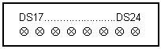
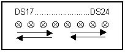
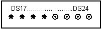
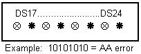
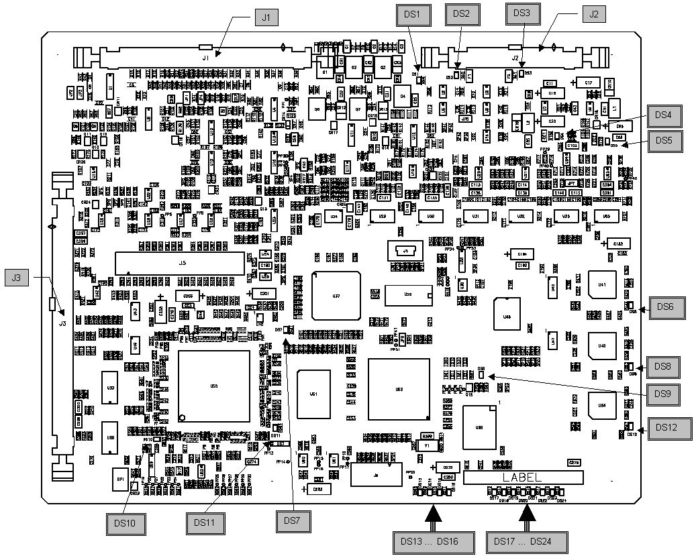
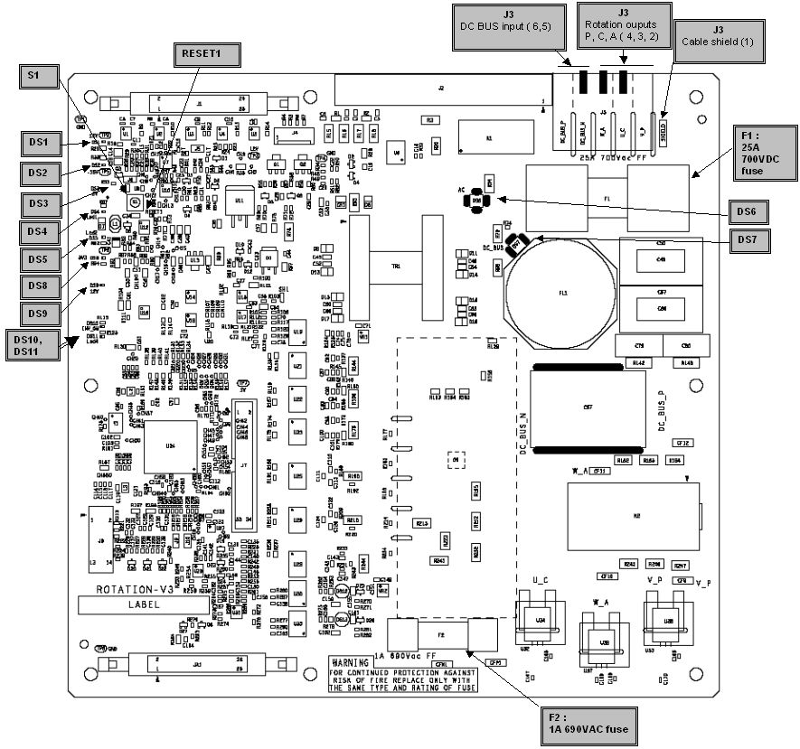
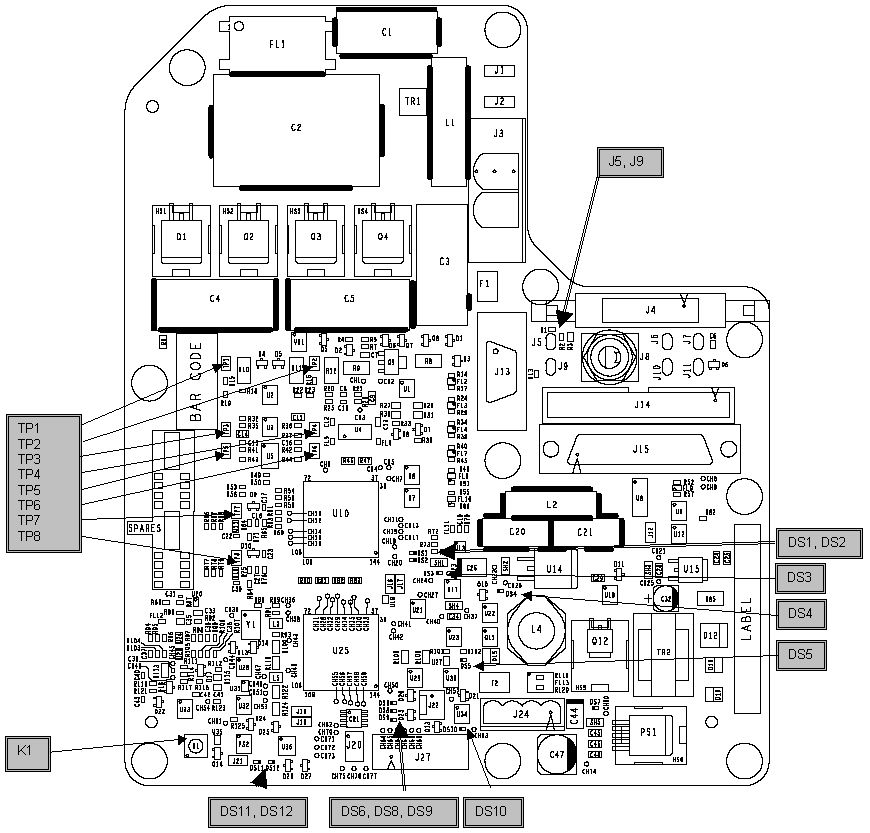

Operating Documentation
Direction 5307452-8EN, Rev# 4
Discovery CT750 HD Service Methods - Adv
Operating Documentation |
| Last Revised: | 23 September 2008 |
This section provides LED, switch, test point, and fuse information for the JEDI Generator Subsystem. All test points and LEDs are easily accessible and clearly labeled. Standard color coding of LEDs is used:
RED for hazard / fault conditions
GREEN for OK status conditions
YELLOW for other conditions
The boards covered in this procedure are:
The PPC kV control board in the Inverter
The Rotation board in the Auxiliary Box
The SC-Drive board in the HV Tank
The JEDI Smart Cathode software performs self-tests during power-up and continuously monitors the correct operation of its functions during application. The LED displays offer useful visual feedback which can help to enable error code-based troubleshooting. Whenever in doubt, a useful first step is to watch the LED status display on the PPC kV control board, rotation board, and SC-Drive board. The notation used for documenting LED status is shown in Illustration 1.
Illustration 1: LED Status Notation
The yellow LEDs DS17 to DS24 indicate the status of the PPC kV control board. During power-on self-tests they blink together in unison very rapidly as shown in Illustration 2. During normal operation they are lit more slowly in a sequential pattern in two groups: DS17 to DS21 and DS22 to DS24 as shown in Illustration 3.
Illustration 2: PPC kV Control Board Power On Self-Tests

Illustration 3: PPC kV Control Board Normal Operation

If half of the eight LEDs are lit then the board is of questionable status. After download of the boot code, this pattern indicates that the PPC kV control board has erased the flash memory and is preparing for the download of the application. When these tasks are done, the four LEDs on the right will light as shown in Illustration 4. However, this can also indicate a corrupt software problem or a database checksum problem. If it is a software problem, communication to the generator will not be possible. Try to download the software again or replace the PPC kV control board. In case of a database problem, an error code is logged and communication with the generator is possible. Refer to error code description for further actions.
Illustration 4: PPC kV Control Board Questionable Status

When an application error occurs, the LEDs blink, indicating the simplified error code in binary code. An example pattern is shown in Illustration 5. When the error is cleared, the eight LEDs are lit in succession.
Illustration 5: PPC kV Control Board Application Error

After power-on self-tests, and after the database downloads successfully, DS4 is blinking. DS5 blinks when CAN messages are received. DS10 is lit when the rotation power inverter is activated. Any other status indicates an abnormal situation and an error code will be logged. The LED locations are shown in Illustration 7.
Interpretation of the LEDs on the SC-Drive board is shown in Table 5. All LEDs, except DS2, DS3, and DS6 - DS8 are static, whether on or off. DS2 and DS3 are active LEDs for the FPGA, and DS6 - DS8 are active LEDs for the DSP.
The different states for DS6 through DS8 are:
If DS6 and DS8 are ON and DS7 is OFF: the board is in boot mode, waiting for application download.
If DS6, DS7 and DS8 are all ON: there is no firmware or firmware is not running.
If DS6, DS7 and DS8 are lit sequentially: the board is in normal mode with firmware running.
If DS6, DS7 and DS8 blink together: the board is in an error state.
If DS2 and DS3 are lit sequentially, the board is in normal mode with the FPGA running.
The PPC kV Control board is located in the Inverter. Its schematic is shown in Illustration 6.
Illustration 6: PPC kV Control Board

No test points.
LED indicators on the PPC kV Control Board are shown in Table 1. Reference locations are called out in the board schematic.
Table 1: PPC Control Board LED Status
| Indicator | Color | Indicates |
|---|---|---|
| DS1 | Yellow | Gate command enable for IGBTs |
| DS2 | Green | -15V power supply input |
| DS3 | Green | +15V power supply input |
| DS4 | Green | 5V VCC power supply |
| DS5 | Green | 3.3V power supply |
| DS6 | Yellow | High speed internal CAN reception (1 Mbits) |
| DS7 | Yellow | DSP is in user mode |
| DS8 | Yellow | External CAN reception |
| DS9 | Red | Flash memory programming |
| DS10 | Red | FPGA not in user mode |
| DS11 | Yellow | Not used |
| DS12 | Yellow | Long distance internal CAN reception (256 kbits) |
| DS13 | Yellow | Not a diagnostic LED |
| DS14 | Red | Only during programming. Not a diagnostic LED |
| DS15 | Yellow | Not a diagnostic LED |
| DS16 | Red | Reset state |
| DS17...DS24 | Yellow | Status LED. In application mode, these LEDs blink in sequence continuously. |
| ELECTROCUTION HAZARD | |
| HIGH VOLTAGE PRESENT | |
| DO NOT OPEN OR WORK ON THE AUXILIARY BOX UNTIL INDICATOR DS6 AND DS7 (NEON-ORANGE) ARE OFF. |
The board is located in the Auxiliary box. Its schematic is shown in Illustration 7.
Illustration 7: Rotation Board V3

Test points on the Rotation Board are shown in Table 2. Reference locations are called out in the board schematic.
Table 2: Rotation Board V3 Test Points
| Item | Function |
|---|---|
| S1 | Reset push-button ( go in Reset state ) |
| F1 | 25A 700VDC fuse |
| F2 | 1A 690VAC fuse |
LED indicators on the Rotation Board are shown in Table 3. Reference locations are called out in the board schematic.
Table 3: Rotation Board LED Status
| Indicator | Color | Indicates |
|---|---|---|
| RESET1 | Red | Active Reset state |
| DS1 | Green | +15V power supply input |
| DS2 | Green | -15V power supply input |
| DS3 | green | +5V internal power supply |
| DS4, DS5 | Yellow | DSP activity status |
| DS4 : | ||
| DS5 : | ||
| DS6 | Orange | AC line active |
| DS7 | Orange | DC-Bus active |
| DS8 | Green | +3.3V internal power supply |
| DS9 | Green | +12V internal power supply |
| DS10 – INV_ON | Yellow | Rotation power inverter ON |
The SC-Drive board is located in the Tank. Its schematic is shown in Illustration 8.
Illustration 8: SC-Drive Board V3C

Test points on the SC-Drive board are shown in Table 4. Reference locations are called out in the board schematic.
Table 4: SC-Drive Board Test Points
| Item | Function |
|---|---|
| K1 | Reset push-button ( go in Reset state ) |
| TP1 | SC² COMMunication emission : +/- 8V level |
| TP2 | SC² COMMunication emission : +/- 8V level |
| TP3 | SC² COMMunication reception : +/- 8V level |
LED indicators on the SC-Drive board are shown in Table 5. Reference locations are called out in the board schematic.
Table 5: SC-Drive Board LED Status
| LED | LED On | LED Off | Color |
|---|---|---|---|
| DS1 | FPGA alive 1 | FPGA out | Yellow |
| DS2 | FPGA alive 2 | FPGA out | Yellow |
| DS3 | 5V ok | 5V out | Green |
| DS4 | +1.2V ok | +1.2V out | Green |
| DS5 | FPGA configured | FPGA not configured | Green |
| DS6 | DSP alive 1 | DSP out 1 | Yellow |
| DS7 | +3.3V ok | +3.3V out | Green |
| DS8 | DSP alive 2 | DSP out 2 | Yellow |
| DS9 | DSP alive 3 | DSP out 3 | Yellow |
| DS10 | 3V3_REF ok | 3V3-REF out | Green |
| DS11 | Active Reset state | Inactive Reset state | Red |
| DS12 | Active JTAG Reset state | Inactive JTAG Reset state | Red |